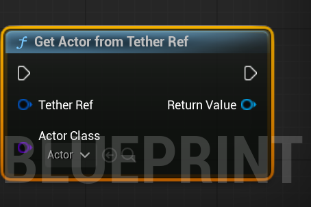
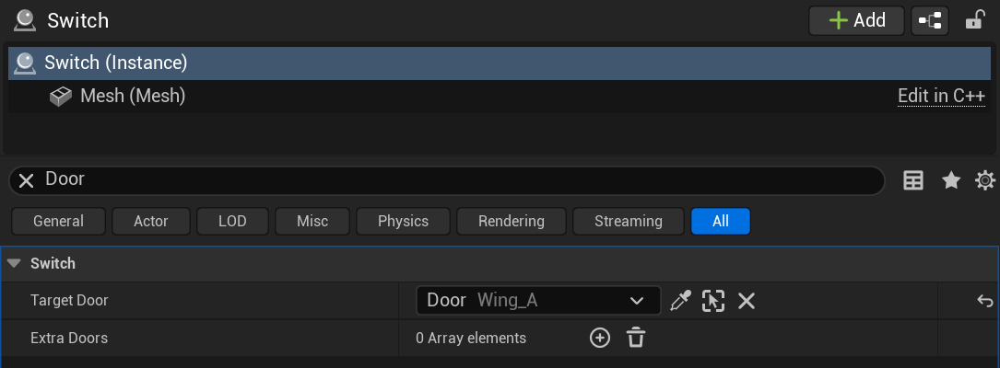
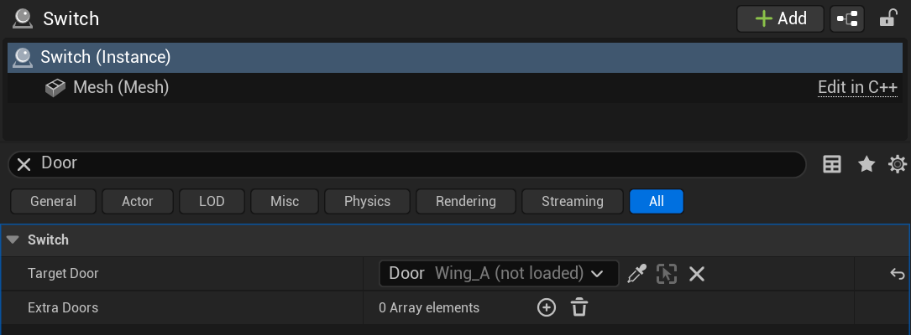
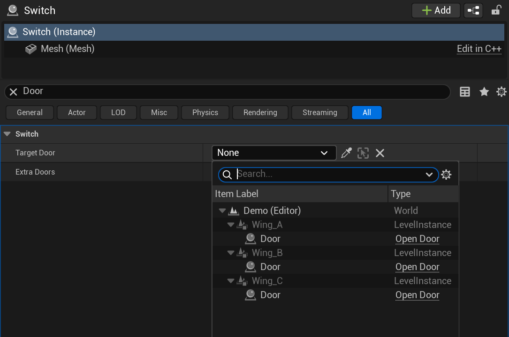
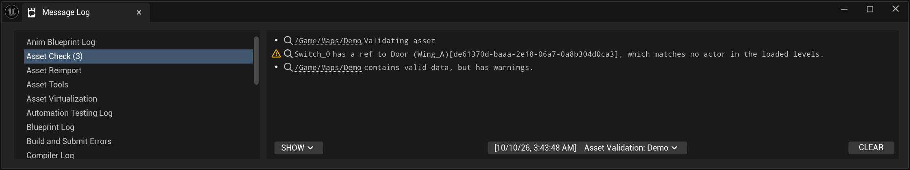
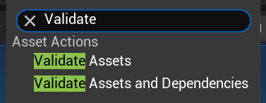

Reference
The Technical Reference
This page is meant as a quick reference on the plugin under the hood: the ID a reference keys on, every piece of stored data, ref resolution, the editor's row and picker, the Data Validation checks, and the cook step for a packaged build. For day-to-day use, Getting Started is the shorter read.
To use this system, you need to understand two main building blocks:
UTetherComponent- The component you put on an actor. Any actor that has one can be referenced. It registers itself with a world subsystem while its actor is loaded.
FTetherRef- The reference you put anywhere that points at an actor. It stores the target's per-placement guid, or its bare guid and the level instances in between when the ref is relative, plus the target's label and level-instance path from when the ref was made.
The plugin has two modules. Tether is the runtime module: the
component, the ref struct, the world subsystem, and UTetherLibrary,
which makes and resolves refs. It loads at PreDefault.
TetherEditor holds the details row, the cook bake, and the Data
Validation check. The plugin targets UE 5.8 and sets EnabledByDefault, so a
host project needs no .uproject entry. It depends on the engine's
DataValidation plugin, which ships enabled.
Mechanics
Identity: The Per-Placement Guid
A reference doesn't key on a name, a label, or an object path. It keys on the engine's per-placement actor instance guid.
Every actor has an ActorGuid that's saved with it. That's enough to identify an
actor placed directly in a level. It isn't enough for level instances. When you build a
room as its own level and place it three times, the room's asset stores each actor once.
All three copies of a door inside it share one ActorGuid.
The engine solves that with an instance guid. It combines the guids of the level instances
an actor sits in with the actor's own ActorGuid, which gives each of the three
doors a different value. We call each of those copies a "placement". A placement is one
copy of an actor as it exists in the world, as opposed to the actor as it's saved in a
level asset.
UTetherLibrary::GetPlacementId is the one place that answers "which
placement is this?". The resolver, the picker, the cook bake, and Data Validation all go
through it.
- In the editor and PIE it folds the level's container and the actor's
ActorGuid, which is the same arithmetic as the engine's instance guid and also covers a level instance open for editing, where the engine has no value yet. Outside any level instance it takes the engine's instance guid as is, which is what a World Partition cell carries. - In a cooked build the engine has released that value by the time gameplay runs. It falls back to the value the cook baked into the actor. Check out Cooked Builds below.
A level's container follows one rule in both builds. If the level instance actor that owns
the level is itself placed inside something, the container is that actor's own placement.
That's what keeps three Standalone rooms under three Embedded wings apart, since the engine
gives all three the same inner guid. Otherwise it's the engine's level-instance guid. A
level loaded at runtime as a renamed copy of its package, through
ULevelStreamingDynamic::LoadLevelInstance, takes a guid from its unique
package name instead, so two runtime copies never share ids. Otherwise there's no
container, which is the main level.
Stored Data
Every piece of saved data lives on an ordinary UPROPERTY and saves with
whatever object owns it. The one runtime structure is a per-world index of loaded tethered
actors, covered under resolving below. It's rebuilt as levels load and is never saved.
On the referenced actor
An actor opts in by having a UTetherComponent. You can add it to a class
in C++ or a Blueprint, or to one placed actor in the level, engine classes included.
UTetherLibrary::GetTetherComponent finds it with
FindComponentByClass. If an actor has more than one, the first one wins.
The component holds one field:
PlacementId- AnFGuidthat stays empty in every editor-saved package. Only the cook writes it, which lets a cooked build still answer which placement an actor is.
The actor's identity in the editor isn't stored by the plugin at all. It's the engine's own
ActorGuid, saved in the actor's level package (or its external actor package
under One File Per Actor), plus the level-instance chain the engine already tracks.
On the reference
FTetherRef is a plain value struct. It saves as tagged properties inside
whatever owns it: an actor, a component, a data asset, a Blueprint default, a save game, or
anything else that serializes a USTRUCT.
TargetId- The target's per-placement guid. When the ref is relative, the target's bareActorGuidinstead.bRelative- Set when the ref was picked at an actor in the owner's own level, or a level instance nested in it. A relative ref folds onto the owner's placement when it resolves. It means the same thing in every copy of the level it was authored in, placed or loaded at runtime.RelativePath- For a relative ref, the guids of the level instances between the owner's level and the target, outermost first. Empty when they share a level.CachedLabel- The target's label when the ref was made. The details row shows it when the target isn't loaded and has no descriptor.ToDebugString()prints it next to the guid.CachedLevelInstancePath- The labels of the level instances the target sat in when the ref was made, outermost first (Wing_A.Room_3). A relative ref keeps only the part below the owner's level.
Both labels save in every build configuration, since a UPROPERTY can't be
compiled out of Shipping alone and every configuration loads the same cooked packages. In
Shipping, PostSerialize empties both as each ref loads. They hold no
memory at runtime. They're still on disk.
Left out on purpose
- No pointer to the target. A ref never caches the actor it resolved to. It can't dangle.
- No object path. That's what breaks under level-instance path mangling.
- No class. The ref doesn't know what kind of actor it points at until it resolves. The class filter on the resolver covers typed lookups.
Resolving A Ref
Resolution is a lookup against the loaded tethered actors, done at the moment you ask. Call
UTetherLibrary::GetActorFromTetherRef, or the typed C++ helper
ResolveTetherRef<TActor>, which passes
TActor::StaticClass() and casts the result.
if (ADoorActor* Door = UTetherLibrary::ResolveTetherRef<ADoorActor>(this, TargetDoor))
{
Door->Open();
}
In Blueprint, the node is "Get Actor From Tether Ref". Its output pin takes the type
of the class you pick. The first argument, hidden on the node and filled with
self, is the owner: the actor or component that holds the ref. A relative ref
folds onto the owner's placement. Pass the holder.
Outside Shipping, resolving a relative ref from something that isn't inside an actor at
all logs a warning once per target.

The resolve steps
- Refuse an unset ref. An invalid guid would match every actor that has no instance guid. An unset ref returns null before anything else runs.
- Work out the placement id. An absolute ref's is its
TargetId. A relative ref folds the owner's container, then its path, then itsTargetId. - Look it up. The owner's world has a
UTetherSubsystemthat indexes every registered tethered actor by placement id. The lookup is one hash find. - Stop on a second match. If two live actors share the id, the resolve returns null.
- Filter by class. If you passed an actor class, the match has to be that class or a subclass. A null class accepts any actor.
Unique or null
The resolver never picks one actor out of several. If two tethered actors share a placement id, every ref to them returns null. Acting on an arbitrary one of two is worse than acting on nothing, since nothing tells the caller the answer was a guess.
With per-placement guids a collision should be rare. The check is a safety net for things like a cooked value that slipped past the bake, or a corrupted value. Data Validation reports shared placement ids as errors. You'll usually hear about one long before a resolve hits it.
The index's view
Each UTetherComponent registers itself with its world's subsystem in
OnRegister and removes itself in OnUnregister. Components
register when their level becomes visible and unregister when it's hidden or unloaded, or
when the actor is destroyed. The subsystem files each actor by placement id on the first
resolve after it registers, since at registration its level instance may still be loading.
An actor whose id isn't ready yet stays pending for the next resolve.
Each world has its own subsystem. The editor world and every PIE world keep separate indexes.
- An unresolved ref keeps its guid. It starts resolving the moment the target's level streams in, which is common under World Partition.
- If two actors share a guid but only one of them is in a visible level, the resolver can't see the conflict and returns the visible one. Data Validation scans hidden levels too. It does catch this case.
Cost
A resolve is a hash find. The first resolve after a level streams in pays once for the actors it brought, to work out their placement ids. After that the number of tethered actors in the world doesn't change the cost.
Making a ref at runtime
UTetherLibrary::MakeTetherRef builds a ref from an actor in C++.
It returns an unset ref unless the actor is a tethered actor with a valid placement id. Pass
the owner as the second argument to get the relative form when it applies. Blueprints
can't call it. Refs are meant to be picked in the editor. An actor spawned in a
packaged build has no baked guid to make one from anyway.
Equality, Hashing, And Containers
Two refs are equal when they point at the same actor the same way: the same
TargetId, the same form, and the same path. The label doesn't count.
Re-picking the same actor under a new label still finds the same TSet element
or TMap key. A relative and an absolute ref to one actor are two different
keys.
The struct has the same basics as FMassEntityHandle:
IsSet()andIsValid()- True when a target is set. Neither checks that the actor is loaded.Reset()- Clears the target, the form, and the labels.==,!=, andGetTypeHash- By target and form.<- Has meaning only for sorting.ToString()andLexToString- The target guid as text.ToDebugString()- The label and the guid, plus "relative" when it is, outside Shipping.
The struct sets WithIdenticalViaEquality, which makes reflection compare refs
with the same == the hash uses. That keeps the details panel's duplicate check
for sets and map keys in line with C++.
Note: One side effect of comparing by target is delta serialization. If a ref matches its archetype's target but carries a different label, the engine treats it as unchanged and won't save the label.
Editor Integration
The Details Row
FTetherRefCustomization replaces the default struct layout for every
FTetherRef property with one row:
Target Door [ BP_Door Wing_A.Room_3 ▾ ] [✕]- The label - The actor the ref points at. Check out the next section for where it comes from.
- ▾ - Opens the actor picker.
- ✕ - Clears the ref back to "None".
The row has no child rows. TargetId and the cached labels never show up for
hand editing.

The label
The row resolves the ref from the object that owns it and shows the target's actor label first, then the labels of the level instances it sits in, outermost first, in dimmer text. Several placements of one room share a label. Without the chain you couldn't tell which one you picked. It's looked up live. A rename shows through right away.
When the target isn't loaded, the row tries two more sources before giving up. Under World Partition an unloaded actor still has an actor descriptor, which carries its label and sits in its level instance's container. The row reads the label and the chain from there and adds "not loaded". Outside World Partition there's no descriptor. The row shows the labels saved when the ref was made, with "not loaded" after the path. If there's no saved label either, it shows the guid.

Slate asks for the label every frame, and each ask would be a resolve. The row caches the text for half a second. A new pick changes the key and recomputes right away. The descriptor lookup walks every descriptor in the world. That result is kept for five seconds.
The Picker
The picker is a Scene Outliner filtered to actors a ref can point at. It uses the resolver's test (a valid tethered actor) and also drops child actors, which the cook won't bake. So what you can pick is what can resolve, in the editor and in a packaged build.
Level instances expand like folders. You can drill in and pick one placement. Two placements of the same room show up as two separate entries.

Note: There's no eyedropper. Clicking level-instance content in the viewport selects the whole level instance. The outliner is the reliable way in.
Relative or absolute
The pick decides the form. The row compares the level-instance chain of the object that owns the ref with the target's. When the owner's chain is a prefix of the target's, which means the same level or a level instance nested in it, the ref is stored relative. Otherwise it's absolute. Open a room level and point a switch at the room's door, and every placement of that room gets its own door. Point at that door from a map that places the room. That ref is absolute to the one placement. When the row edits several objects at once, the ref is relative only if it reads the same from each of them.
Limiting the picker with AllowedClasses
Add AllowedClasses to the property's metadata, as a comma-separated list of
class paths, to limit what the picker offers. It works like it does on the engine's own
object pickers.
UPROPERTY(EditAnywhere, meta = (AllowedClasses = "/Script/MyGame.DoorActor, /Game/BP_Gate.BP_Gate_C"))
FTetherRef TargetDoor;Note: This only works on C++ properties, since a Blueprint variable can't carry that metadata. It limits the picker and Data Validation checks it. Resolving doesn't enforce it. Pass an actor class to the resolver when you need a typed result.
Writing a pick
A pick builds the new ref with MakeTetherRef, records the qualified label,
and writes the result through the property handle. The write exports the struct as text
and calls SetValueFromFormattedString, inside a "Set Tether Reference"
transaction. It undoes like any other edit and applies to every selected object at once.
It goes through the handle, never into raw memory, because of containers. When the ref is
a TSet element or a TMap key, only the handle path rehashes the
container afterwards and refuses a duplicate.
Refs inside containers
FTetherRef works in a TArray, as a TSet
element, and as a TMap key or value, in C++ and in Blueprint. Each element
gets the same row.
- Metadata - An element reads
AllowedClassesfrom its container property. Onemetaon aTArray<FTetherRef>limits every element. - Duplicates - Picking an actor that's already in a set, or already a key in a map, fails with the engine's usual duplicate warning. Two refs to one actor are equal even when their labels differ.
- Clearing - Clearing two set elements would make two unset refs, which are equal. The second clear is refused the same way.
UPROPERTY(EditAnywhere)
TMap<FTetherRef, int32> DoorKeyCodes;
UPROPERTY(EditAnywhere)
TSet<FTetherRef> LockedDoors;Data Validation
The Checks
UTetherValidator is an engine Data Validation validator in the editor
module. The engine registers it automatically. "Validate Data" in the content browser,
validate-on-save, and the DataValidation commandlet all run it. Its messages
land in the Message Log with a link to each actor it reports.


Inputs
It accepts a world, or a single actor that's in a world.
- A world with named actors - Under One File Per Actor, a validation run usually names the external actor packages that changed. The check covers just those actors.
- A world on its own - The check covers every loaded actor in the world.
- A single actor - The check covers that actor.
For every actor it covers, it also looks at the actor's components, and at refs nested
anywhere in their properties: in a TArray, a TSet, a
TMap key or value, or a nested struct. Each run starts by indexing every
loaded actor in the world by placement id. It includes plain actors, which lets the check
tell "no such actor" apart from "not a tethered actor". It also includes actors in hidden
levels, which aren't registered with the resolver's subsystem. A relative ref is looked up
by the id it resolves to from its owner.
Tethered actors
- A
PlacementIdsaved in editor data (error) - Only the cook writes that field. It restores the editor copy afterwards. A saved value means a cook left it behind. - A placement id shared with another loaded tethered actor (error) - Every ref to either actor resolves to null.
- More than one
UTetherComponenton the actor (warning) - Only the first one counts. The others do nothing. - No instance guid (warning) - Nothing can reference this actor.
Refs
An unset ref is skipped. A set ref gets one of these:
- Matches more than one tethered actor (error) - It resolves to null.
- Points at an actor with no
UTetherComponent(error) - The resolver only matches tethered actors. It never resolves. This usually means someone removed the component from the target, from its class or from that one placed instance. - Points at a child actor (error) - The cook doesn't bake child actors. It resolves in the editor but won't in a packaged build.
- Points at an actor its
AllowedClassesmetadata doesn't allow (error) - The picker would never have offered that actor. An element in a container uses the container's metadata. - Matches no actor in a World Partition world, loaded or not (error) - The target is gone. "Move to Level", "Create Level Instance", and "Break" all give an actor a new id. This is usually one of those. Re-pick the target.
- Matches no actor in the loaded levels (warning) - Outside World Partition this is the whole story. Inside it, this fires only while the descriptors can't be checked, which happens while a level instance is mid-load or mid-unload. Re-run once the world has settled.
The message names the ref by ToDebugString(), the saved label and
level-instance path plus the guid. That tells you what it used to point at, even when the
target is gone.
Finding broken refs under World Partition
Most actors in a partitioned world are unloaded. "Not loaded" can't mean "broken" on its
own. The check asks the world's actor descriptors instead. Every container has one for each
actor, loaded or not. Level instances have child containers of their own. The check
rebuilds each placement id as ContainerID.GetActorGuid(ActorGuid), which is how
the engine builds instance guids. It only reports when it can trust that set: every level
instance has a child container, and every loaded tethered actor's live id is in the set.
Otherwise it falls back to the warning above rather than saying nothing.
Warnings, not errors
Outside World Partition, a dangling ref only warns. There's no descriptor list to check against. A sublevel can still be unloaded in the editor. A missing target is suspicious but not proof. The component warnings don't break anything on their own. An extra component is ignored. An actor without an instance guid just can't be referenced.
Cooked Builds
The Cook Bake
The problem
In the editor and PIE the per-placement guid is live. A cooked build is different. The
engine serializes the value at cook and re-annotates actors with it on load. Then
AActor::PostRegisterAllComponents releases that annotation, long before any
gameplay code can ask for it. In a cooked build the accessors don't exist at all. So the
identity a ref keys on is gone at runtime. Without help, every resolve in a packaged game
would return null.
The bake
The fix is to copy the guid onto the actor while the cook can still read it. Each tethered
actor's UTetherComponent::PlacementId is empty in the editor. During a
cook save, the editor module writes the live instance guid into it. The cooked package for
that actor then carries the value. The engine does the same thing in
USmartObjectComponent::PreSave, for the same reason. The bake lives in the
editor module, which works because the cook commandlet runs the editor and loads its
modules.
The editor module registers three hooks at startup:
FCoreUObjectDelegates::OnObjectPreSave- Writes the value. It only acts when the save context reports cooking, which means a target platform is set. An ordinary editor save bakes nothing.UPackage::PackageSavedWithContextEvent- After each cooked package saves, restores every value the bake wrote.UE::Cook::FDelegates::CookFinished- LogsCook bake: baked N actor(s). Folded M relative ref(s).and restores again.
Baked actors
An actor gets baked when all of these hold:
- It's not a template. Writing to a class default or archetype during
PreSavetrips the cooker's non-deterministic cook check. - It's not a child actor. A child actor's
ActorGuidis random per session, so a baked value would be dead the next time you cook. That's also why the picker won't offer child actors. - It's a tethered actor, meaning it has a
UTetherComponent. - It has a valid instance guid. If it doesn't, the bake logs a warning and skips it, since nothing will be able to reference it.
Relative refs at cook
The same save hook looks at every FTetherRef on every object it saves.
On an actor the cook has flattened into a World Partition cell, a relative ref is folded
to its absolute form, since the game has no container for a cell to fold onto. A ref whose
owner is in the main container stays relative, because a level cooking on its own learns
its placement only when it loads. These edits are restored the same way the bake is.
Restoring the editor copy
The cook saves live editor objects. Left alone, the bake's writes would stick to the actors
in your open level. Before writing, the bake records each actor's previous value. The
restore puts it back. Two details in that bookkeeping matter. It records the previous value
only the first time it sees an actor, because if a cooking save fails no restore runs, and
a retry would otherwise record the baked value as the original. And it restores at
CookFinished as well as after each package, because the post-save event never
fires for a failed save. If a cook does leave a value behind and someone saves the level,
Data Validation reports it as an error.
Reading the baked value
GetPlacementId reads the live value in the editor and PIE. In a cooked build it
can't, since ActorGuid is editor-only data. It calls
GetBakedPlacementId instead, which reads PlacementId and folds the
level's container onto it first.
That looks like a double combine. It isn't. A level instance in Standalone mode cooks as its own asset. Nothing writes an instance guid when that happens, which leaves the bake with only the actor's own half. The read folds the level's container back in at runtime. Embedded content bakes an absolute value and sits in a level with no container. The fold adds nothing there. The two cases don't overlap.
The level instance actor's own placement
A Standalone level instance inside an Embedded one needs its owning level instance actor's placement at runtime, and the engine throws that away with everything else. The subsystem reads it in the window between load and release: when a streamed level begins making visible, and at world initialization for the persistent level, since subsystems come up before the persistent level registers anything and a cooked World Partition map keeps its flattened content there. It only captures from a level nothing owns, where the engine wrote the value. Nothing to add, nothing to configure.
Verified so far
We verify the whole path from a packaged build. Embedded, Standalone, nested three deep, Standalone under Embedded, classic sublevels, a partitioned room placed Embedded, placements spread across distance-streamed cells, and a room loaded twice at runtime all resolve every reference to the right placement, in the editor and in the packaged build. Nothing resolves to a wrong actor. Editor edits behave too: removing and re-adding the component, duplicating and deleting the door or the room, undo, redo, commit, swapping the world asset, and break each give null or the original, never a copy.